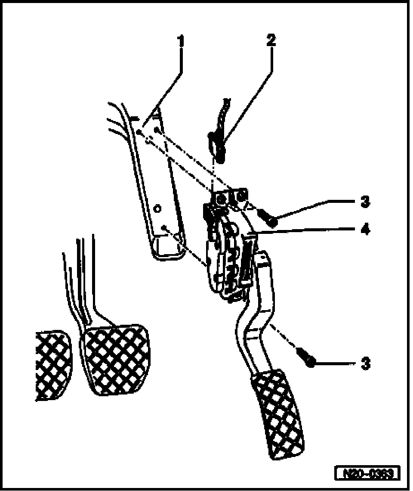

Procedures
Electronic Engine Power Control (EPC), Servicing Components

1 Mounting bracket
2 Connector
- Black, 6-pin
- Terminals are gold-plated
3 10 Nm
4 Throttle Position (TP) sensor -G79- and sender -2- for accelerator pedal position -G185-*
- Not adjustable
- Throttle Position (TP) sensor communicates the driver's intentions to the Engine Control Module (ECM)
- To remove sensor, remove cover in footwell